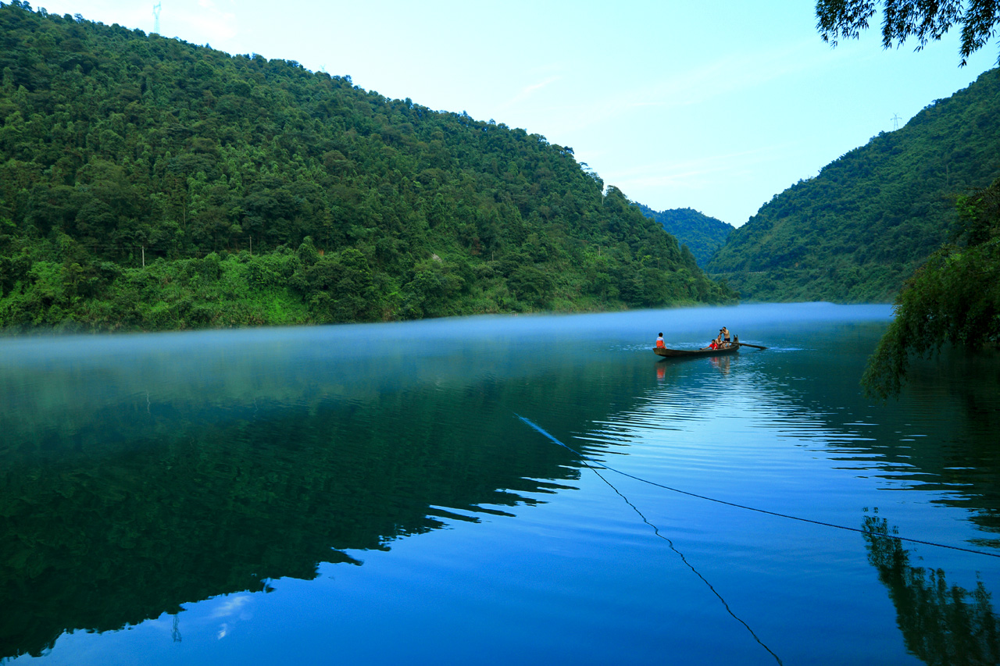

Description
Dongjiang lake Dongjiang lake is located in zixing city, northeast of hunan province. It is a lake enclosed by nanling mountain and luoxiao mountain (bamian mountain and zhuguang mountain). It is one of the headwaters of lei water, 30 kilometers from chenzhou city in the west.It is a national scenic spot, a national AAAAA tourist area, a national eco-tourism demonstration area, a national wetland park, and a national water conservancy scenic area.
This photo of XiaoDongJiang in Dong Jiang Lake was taken on September 01,2012 with a Canon EOS 5D Mark camera.
Photo by HeyGe

XiaoDongJiang in Dong Jiang Lake
Share:


Reviews
By Nancy on
I love this breathtaking lake!
By YuHao Chen
It's a great palce for vacation.